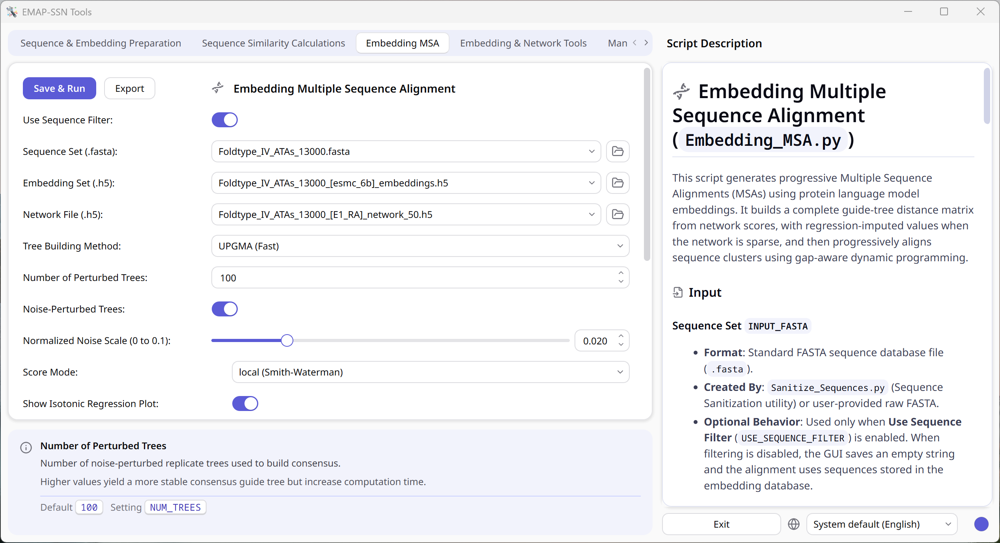
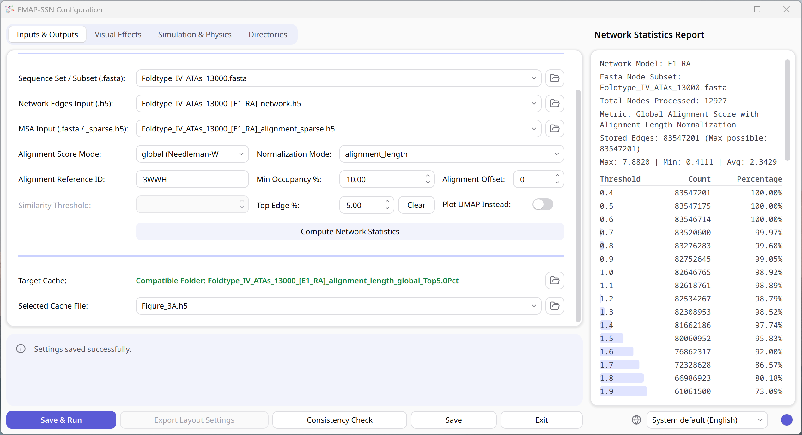
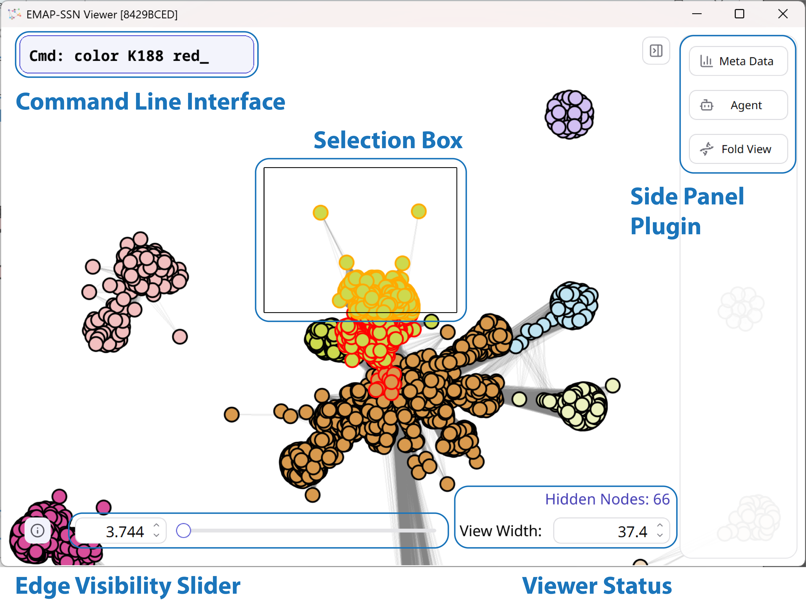

EMAP-SSN Quick Start Manual
Comprehensive Guide: Workflow & GUI SuiteA comprehensive primer on the Embedding- and Multiple-Alignment-integrated Protein Sequence Similarity Network (EMAP-SSN) platform. This manual connects the overarching computational pipeline with the visual graphical user interfaces (GUIs), guiding you from raw sequence databases to interactive multi-scale network analysis.
This manual covers high-level pipeline logic, GUI architectures, and end-to-end user workflows. For exhaustive parameter references of individual standalone command-line scripts, see the markdown files in src/tools/tool_descriptions/. For complete syntax and parameter documentation of interactive console HUD commands, consult the Viewer Command Reference.
Sequence Similarity Networks (SSNs) are indispensable tools in modern computational biology and protein biochemistry. By transforming all-versus-all sequence comparison scores into graph topologies, SSNs partition large, diverse protein superfamilies into distinct isofunctional clusters, revealing evolutionary trajectories, enzymatic promiscuity, and divergent subfamilies.
However, traditional SSNs present two fundamental limitations:
- The Twilight Zone Barrier: Conventional pairwise alignment methods (e.g., BLAST bit scores, Smith-Waterman identities) fail when sequence identities drop below 20–30%, obscuring remote structural homologs and deorphanized natural enzymes.
- The Multi-Scale Disconnect: Traditional network viewers render macroscopic clusters as abstract spheres or graph nodes without direct, continuous coupling to the underlying Multiple Sequence Alignment (MSA) or 3D atomic structures. An analyst observing a divergent cluster has historically had to manually cross-reference external alignment editors to identify which specific catalytic or specificity-determining residues dictate cluster divergence.
EMAP-SSN overcomes both hurdles by introducing:
Protein Language Model (pLM) Embeddings
Leverages state-of-the-art representations (ESM-2, ProtBERT, ProstT5, Ankh) to align sequences using dense embedding similarity matrices rather than static amino acid substitution tables (BLOSUM62/PAM250), capturing deep structural and evolutionary relationships in the twilight zone.
Native MSA & Structural Integration
Directly maps MSA residue conservation onto the network nodes. Commands like color K188 red or logo [180-195] project microscopic chemical features directly into the macroscopic network view in real time, complemented by Mol* 3D views of predicted protein structures.
The EMAP-SSN pipeline consists of two overarching stages: the Computational Stage (executed via EMAPSSN_Tools.py or headless CLI scripts) and the Visualization & Analysis Stage (orchestrated by EMAPSSN_Config.py and visualized in EMAPSSN_Viewer.py).

| Workflow Dimension | Traditional Sequence-Based Path (Blue) | Modern Embedding-Based Path (Orange) |
|---|---|---|
| Initial Preparation | Raw FASTA sanitized with Sanitize_Sequences.py to normalize headers and enforce length boundaries. |
Raw FASTA sanitized with Sanitize_Sequences.py, ensuring clean input for neural network tokenizers. |
| Representation | Discrete character amino acid alphabet (20 natural amino acids). | High-dimensional dense vector representations computed via Generate_Embeddings.py (e.g. ESM-2 650M, ESM C, ProtBERT). |
| Pairwise Similarity | BLAST+ (blastp) or FASTA (ssearch36) yielding E-values and bit scores. Stored as HDF5 matrix in Networks_EValues/. |
All-vs-all dynamic programming alignment over residue-level embedding similarities (Align_Similarity_Matrix.py). Stored in Networks_EValues/. |
| MSA Generation | External aligners: MUSCLE, Clustal Omega, MAFFT, or T-Coffee. Resulting FASTA placed in Multiple_Alignments/. |
Evolutionary guide-tree construction directly from embedding similarity/distance matrices (Embedding_MSA.py) followed by progressive profile alignment. |
| Sensitivity Boundary | Optimal for sequence identities > 30–40%. Fast and universally benchmarked. | Succeeds in the "twilight zone" (< 25% identity); sensitive to structural homology and active site conformation. |
Layout Generation & Manifold Topologies
Regardless of whether pairwise scores originate from BLAST E-values or pLM embedding alignments, the pairwise similarity matrix can be solved into spatial coordinates through three distinct mathematical engines:
- Force-Directed Simulation (Spring-Electrical Physics): Treats nodes as charged particles repelling each other (Coulomb repulsion) and pairwise similarity scores as spring tensions pulling homologous proteins together (Hooke's attraction). This creates an organic, biologically intuitive cluster topology where spatial distances reflect evolutionary relationships.
- UMAP Non-Linear Manifold Projection: Applies Uniform Manifold Approximation and Projection (UMAP) to a $k$-nearest-neighbor graph built from the network's pairwise scores, preserving both local cluster micro-structure and global family geometry.
- PaCMAP Non-Linear Manifold Projection: Applies Pairwise Controlled Manifold Approximation Projection (PaCMAP) to each node's strongest edges, and also samples random pairs of nodes and looks up their stored scores, so clusters keep their micro-structure and lie in a meaningful order relative to each other. It runs on the CPU threads in seconds and gives the same layout for any number of threads.
Every engine produces 2D coordinates by default, which the desktop Viewer displays. A layout settings document with LAYOUT_DIMENSIONS set to 3 produces a separate 3D cache that the desktop Viewer does not open. LAYOUT_SEED (default 42) seeds all three engines, so UMAP layouts and CPU physics layouts reproduce exactly.
The Tools GUI is the centralized graphical workbench for running all data preparation, embedding calculations, sequence similarity alignments, network edge filterings, and MSA constructions.

1. Pipeline Stage Tabs
The Tools GUI categorizes 14 computational programs into clear operational tabs:
-
Sequence & Embedding Preparation: Contains
Sanitize_Sequences.py(cleaning sequence databases, enforcing length thresholds, stripping fragment keywords, deduplicating),Generate_Embeddings.py(computing per-residue representations with models such as ESM-2, ESM C, ProtBERT, ProstT5, and Ankh), andEmbedding_Cropping.py(slicing embeddings for cropped sequences out of an existing full-sequence database instead of embedding the fragments in isolation). -
Sequence Similarity Calculations: Hosts
Align_Similarity_Matrix.py(all-vs-all dynamic programming alignment over residue-level embedding similarities),Align_Substitution_Matrix.py(all-vs-all BLASTP alignment with traditional substitution matrices; requires NCBI BLAST+), andParse_BLAST_Output.py(importing existing tabular BLAST or DIAMOND results as an E-value network; run DIAMOND with-k 0so it reports every hit). -
Embedding MSA:
Embedding_MSA.pybuilds progressive Multiple Sequence Alignments from a guide tree derived from network scores, using residue embeddings for alignment, andSparse_MSA_Converter.pycompresses an aligned FASTA into a compact sparse HDF5 MSA. -
Embedding & Network Tools:
Embedding_Injection.pyandNetwork_Injection.pyadd new sequences to an existing embedding database or network while reusing the stored results, andEmbedding_Extraction.pyandNetwork_Extraction.pyextract subsets of them for a list of sequence headers. -
Manual Tools:
Embedding_PWA.pyaligns two sequences by their residue embeddings and maps positions between them, andEmbedding_SSEARCH.pysearches one query sequence against an embedding database, similar to FASTA'sssearch. The tab also holds the Benchmark card: Run Benchmark times EMAP-SSN's heavy calculations on a bundled set of 860 public protein sequences, so computers and versions can be compared, and saves a report in the card's Report Folder. It asks before it starts. - Directories: Master path manager defining base directories for FASTA inputs, network outputs, embeddings, layout caches, and analysis results.
2. Controls, Tooltips, and Parameter Validation
Input fields in the Tools GUI are context-aware:
- Reactive Dropdowns: Automatically scan their respective target directories (e.g.,
Input_Files/Sequence_Sets/for FASTA files, orEmbeddings/for HDF5 files) and populate valid options dynamically. - Theme Colour: The circle after the Language dropdown, at the bottom right, sets the window's theme colour: Purple (the default), Blue, Teal, Green, Orange, Red, Pink or Black. The Configuration, VR Configuration and Tools windows each keep their own, and the Viewer takes the Configuration window's.
- Dynamic Parameter Tooltips: Hovering your mouse over or clicking into any parameter field instantly updates the status bar at the bottom-left with a concise explanation of the parameter's meaning, expected units, and recommended default range.
3. "Save & Run" vs. "Export" (HPC & Headless Reproduction)
Every tool card features two primary action buttons:
-
Save & Run (the theme-coloured button): Validates input fields, persists settings into
tools_settings.json, and launches the computational script in an isolated terminal or background process, displaying live standard output and progress bars. -
Export: Serializes the exact current configuration into an independent, minimal JSON file saved in
Cache_Files/Exported_Settings/. This decoupled file contains only the parameters and directories necessary for that single tool.
# Linux / macOS HPC Node:
./.venv/bin/python src/tools/Generate_Embeddings.py Cache_Files/Exported_Settings/my_run.json
# Windows:
.\.venv\Scripts\python.exe src\tools\Generate_Embeddings.py Cache_Files\Exported_Settings\my_run.jsonThe Configuration GUI acts as the central control bridge between the raw computational datasets (HDF5 networks, FASTA sequences, MSA alignments, pLM embeddings) and the interactive Viewer. Here, you define file bindings, select layout engines, tune physics parameters, and perform vital pre-flight data integrity checks.

1. Inputs & Outputs Tab
- Saved Config Profile: Switch between
(custom)(saved inviewer_settings.json) and named project profiles stored underCache_Files/Saved_Config/, created with(new). The other tabs also offer(default), a read-only built-in baseline; this tab does not. - Sequence Set / Subset (.fasta): Selects the protein sequences corresponding to the network nodes.
- MSA Input (.fasta / _sparse.h5): Binds the multiple sequence alignment used for residue conservation mapping and sequence logos.
- Embedding Input (.h5): Optionally binds a per-residue protein language model embedding database written by
Generate_Embeddings.py(or the extraction, injection and cropping tools), for Viewer commands that analyse each sequence's embedding. The dropdown lists the.h5files in the Embedding Directory (the project'sEmbeddings/folder by default, as in the Tools); leave it blank for none. A node has an embedding when the file holds its header with the same sanitized sequence; the per-residue data stays on disk and is read only when a command needs it. - Network Edges Input (.h5): Binds the all-vs-all pairwise similarity or E-value matrix.
- Alignment Score & Normalization Modes: Specifies score interpretation (
global (Needleman-Wunsch)vs.local (Smith-Waterman)) and score normalization (Alignment Length,Shorter Sequence,Longer Sequence, orAverage Sequence;Alignment Lengthapplies to global scores only). - Alignment Reference ID & Offset: Names the protein whose native residue coordinates anchor the alignment. The value is matched against the network headers, preferring an exact header, then a leading identifier, then a substring or wildcard match, and the alignment anchors on the resolved header when the MSA contains it. Numbering across all residue commands (e.g.,
color K188 red) then aligns 1:1 with this reference protein's native residue coordinates. If nothing matches or the MSA lacks the resolved header, the Viewer warns at startup, uses occupancy numbering instead, and ignores the offset. - Layout Method: Chooses how the layout is computed, at the end of the row with the Similarity Threshold and Top Edge %.
SSN, the default, runs the force-directed physics (the Simulation & Physics tab).UMAPandPaCMAPplot a non-linear manifold projection instead: UMAP, with tunableUMAP Nearest NeighborsandUMAP Min Distance, or PaCMAP, withPaCMAP Nearest Neighbors(2 to 50), the number of each node's strongest edges it keeps close together and the Viewer draws. These fields take the place of the Similarity Threshold and Top Edge % fields. - Min Occupancy %: The smallest percentage of non-gap characters an alignment column needs to be kept in residue analyses such as logos and conservation. The default is 10.
- Similarity Threshold & Top Edge %: Prunes edges below a given similarity score or keeps only the top $X\%$ strongest edges across the entire network to eliminate topological noise. Top Edge % overrides the threshold; its Clear button unsets it, so the Similarity Threshold applies.
- Target Cache & Selected Cache File: Automatically scans for pre-computed layout coordinates in
Cache_Files/Saved_Layouts/. If found, the Viewer loads the pre-existing layout instantly without recomputing it. Selecting(New Layout Cache)initiates a fresh simulation.
2. Diagnostic Utilities: Pre-Flight Integrity & Cutoff Optimization
Compute Network Statistics
Clicking Compute Network Statistics processes the network edge distribution and generates the comprehensive report in the right panel:
- Reports Total Nodes, Stored Edges, Max/Min/Mean scores.
- Prints a percentile table showing edge counts at various score cutoffs.
- Why it matters: Prevents launching a simulation with a "giant hairball" network (too dense) or completely disconnected singletons (too sparse).
Consistency Check
Clicking the Consistency Check button performs a strict pre-flight validation:
- Cross-checks sequence headers and record counts across the Network HDF5, FASTA sequence set, MSA file, and embedding file.
- For an embedding, also reports FASTA sequences the file stores differently (for example full-length embeddings with a cropped FASTA), its model and width, and notes when an alignment network was built with another model.
- Verifies that sequence identifiers match exactly.
- Why it matters: Prevents catastrophic index out-of-bounds errors or incorrect residue mapping inside the Viewer before simulation begins!
3. Simulation & Physics Tab
When utilizing the force-directed layout, this tab configures the physical simulation solver:
| Parameter | Default | Scientific Description & Tuning Impact |
|---|---|---|
Spring K |
5.0 | Hooke's law attraction stiffness between connected nodes. Higher values pull homologous proteins tighter into compact clusters. |
Coulomb K |
10.0 | Electrostatic repulsion constant. Pushes unrelated nodes apart, expanding distinct clusters into visible open space. |
Coulomb Cutoff |
30.0 | Spatial cutoff radius for repulsion forces. Nodes further apart than this distance do not compute repulsive interactions, drastically accelerating performance for large graphs. |
Damping |
0.9 | Velocity damping coefficient (0.1 to 2.0 in the GUI). Absorbs kinetic energy to prevent perpetual orbital oscillation and achieve steady convergence. |
Max Force Limit |
20.0 | Hidden setting: not shown on the tab, but included in exported layout settings, where it can be edited. Clamps runaway explosive forces during early iterations when random starting coordinates place nodes in extreme proximity. |
Time Step (DT) |
0.005 | Integration step size of the Euler velocity and position updates. Lower values increase numerical stability; higher values speed up convergence. A stage whose springs would be unstable at this value runs with a smaller one, with its step limits scaled to match, and the log says so. Ignored while Auto is ON. |
Auto (Step Size) |
OFF | Button to the left of the Step Size field. When ON, each simulation stage uses the largest step size that keeps it stable, worked out from its springs and repulsion, and the Step Size field is greyed out. Max Steps, RMSD Threshold and RMSD Window still count steps, so stages stop by the same rules whatever step they use. |
RMSD Threshold |
0.005 | Convergence criterion. When the Root-Mean-Square Deviation of node coordinates over a sliding window drops below this value, the simulation halts automatically. |
Cluster Packing Geometry |
Square | Shape the packed layout grows into (Square or Circle): disconnected components are placed around the largest one, nearest the centre first. A 3D layout grows into a cube or a ball. |
Packing Grid Size |
10.0 | Cell size of the grid on which disconnected components are fitted together. Smaller cells pack them more tightly but take longer; drawings of different components always stay at least half of the hidden PACKING_PADDING setting (10 by default) apart. |
4. Visual Effects & Directories Tabs
- Visual Effects: Sets default node sizes, edge widths, edge alpha transparency, label font sizes, and default colors (Initial node, hover, connected edges). Under them, four Low Resource Mode switches each spare the Viewer one kind of work on slower hardware: Fewer Edges Drawn While Moving, No Zoom or Sidebar Animation, Update Colors After Mouse Release and Update Web Pages After Mouse Release; Show Frame Rate (FPS) shows the frame rate at the Viewer's top right. All are off by default.
- Directories: Configures filesystem base paths. Supports portable directory aliases like
$input_file$,$cache_file$,$analysis_result$, and$embedding$so configurations can be shared across different computers seamlessly.
The Viewer GUI is the flagship interactive visualization application of EMAP-SSN. Built upon PySide6 and the VisPy high-performance OpenGL graphics engine, it renders tens of thousands of nodes and edges in real time with smooth pan-and-zoom navigation, dynamic edge filtering, spatial cluster manipulation, and an integrated analytical command console.

1. OpenGL Canvas & Camera Navigation
The main viewport is a 2D pan-and-zoom canvas. The info button at the start of the threshold slider opens a card over the canvas. It shows the session (the number of nodes and edges, and the sequence set, network, layout cache, alignment and embedding files, each path written with the alias of its folder), lists these bindings and links to the Viewer Command Reference. The alignment and the embedding can be changed from the card with the button beside each. Below them the Background jobs section lists the slow jobs that run beside the commands, each with its time or its place in its line: the files that print, label and logo write, one at a time in the Files line, and the structures that esmfold folds, one at a time in the Folding line beside it, which runs at the same time. The running job comes first, then the jobs waiting; with none, one muted line says so. A waiting job can be moved up or down or removed, and the running one can be stopped and removed after a confirmation: it stops at its next step, listed as stopping until it has, and the unfinished file it was writing is deleted. A job that failed stays listed with its reason, and an Open log button when it has a log, until it is dismissed. jobs lists and cancels the same jobs. A slow command such as cluster is not a background job: it is not listed here, and jobs neither lists nor cancels it; undo or Ctrl+Z takes it back while it computes. The card stays open while you work on the network and closes only by its × or by the info button again.
| Action | Mouse / Keyboard Binding | Description |
|---|---|---|
| Pan | Left-Click + Drag | Moves the view across the network. |
| Zoom | Mouse Scroll Wheel | Zooms in and out around the cursor position. |
| Highlight Node | Left-Click on a node | Highlights the node and its direct topological neighbors and displays its sequence header in the HUD (plus its value for a property enabled with meta show). |
| Select Nodes | Right-Click on a node | Selects that node. Hold Shift to add it to the selection or Ctrl (Cmd on macOS) to remove it. Right-clicking empty space clears the selection. |
| Box / Area Selection | Right-Click + Drag on empty canvas | Draws the rectangular Selection Box (as seen in Figure 4) and selects the enclosed nodes. Hold Shift to add them to the selection or Ctrl (Cmd) to remove them. |
| Move Selected Nodes | Right-Click + Drag on a selected node | Moves the selected nodes to separate overlapping clusters for publication figures (not available in UMAP or PaCMAP mode); scrolling while dragging rotates them. Undo with Ctrl+Z and redo with Ctrl+Y. |
| Copy Header / Sequence | Shift or Ctrl + Left-Click on a node | Shift copies the node's full header and Ctrl copies its sequence to the clipboard. |
2. Real-Time Edge Visibility Slide Bar
Located at the bottom-left of the viewport (Figure 4), the Edge Visibility Slide Bar enables instant topological filtering:
- Dragging the slider dynamically increases or decreases the active similarity score cutoff (or E-value threshold).
- The box before the slider shows the active threshold. Type one and press Enter, or use its arrows, the wheel over it or Up/Down once clicked, to set it exactly; the slider moves with it. Its step is the largest power of ten, at most 1, that still gives 1,000 steps across the network's score range, and it shows as many decimals as that step has.
- Edges below the active slider threshold instantly disappear from the screen without requiring you to re-run the layout simulation!
- As the threshold rises, interconnected super-clusters progressively fragment into distinct, specialized sub-clusters, revealing fine-grained evolutionary divergence.
3. Heads-Up Display (HUD) Command Console
Pressing Enter opens the interactive in-line command prompt in the upper-left corner:
- Instant Analytical Control: Type commands to color nodes, calculate Leiden, MCL, or Jaccard clusters, compute residue conservation logos, inspect properties, or export cohorts.
- Layout-Bound Persistent History: Press Up and Down arrow keys to cycle through past commands. Command history is automatically saved per layout in
Cache_Files/Saved_Layouts/<layout>/cli_history.txt! - Error Feedback: Invalid commands report the problem, with usage help, in the console.
color, cluster, logo, select, label, esmfold, and print.
4. Console Buttons & Embedded Web Utilities
The Console window (the Console button at the Viewer's bottom left, Figure 4) has a second row of buttons under its search row. Each opens a web-based analytical tool in your browser, served by the Viewer's local web server. A button joins the row when its command (meta, agent or esmfold) runs, and the row is not shown until one has:
Meta Data Explorer (Tabulator)
Clicking Meta Data launches an interactive, searchable spreadsheet displaying all node annotations, organism taxonomy, EC numbers, and custom metadata. Features two-way live selection sync: selecting rows in the table instantly selects those nodes in the network, and vice-versa!
AI Agent Assistant
Clicking Agent opens an embedded conversational AI assistant. You can ask high-level questions (e.g. "Which cluster has the highest conservation of Catalytic Aspartate?") or instruct the agent to run complex multi-step formatting commands automatically.
A command in the agent's reply that changes only the view runs at once. One that writes or imports files, opens a dialog or spends credit waits in the chat until you press Run or Discard, and Stop ends a turn that is running. The first time you switch on a model card whose server is not on this computer, the page shows what that card receives (the agent's instructions, a summary of the session, your messages and command output, and any images you attach) and sends nothing until you press Continue. Each request re-sends only the last 10 turns of the chat.
Fold View: Mol* 3D Structure Viewer
Clicking Fold View opens the Mol* structure viewer for structures predicted with the esmfold command. Select one node and run esmfold to predict it with the local ESM3 1.4B model, or esmfold large to use ESM3 Large through Biohub's API; multi allows several selected nodes. The prediction opens in Mol*, bridging the network view with atomic structure.
In the page, Color by colors the structures by pLDDT, by structure color, or by a residue layer such as conservation (computed from the alignment loaded in the Viewer when you fold). Hovering a residue shows its values, a click pins it, and the sequence strip under the canvas shows the same residues. The toolbar measures the distance between two residues, labels residues and saves an image with its legend. A PDB or mmCIF file can be added from the Session menu or by dropping it on the page.
5. Viewer Status Stack
The bottom-right corner displays real-time telemetry:
- Zoom: A box level with the threshold slider showing the camera's zoom as a percentage: 100% is a view 300 layout units wide, and a bigger number is closer. Type a percentage and press Enter, or use its arrows or the wheel over it (up and forward zoom in), to zoom to it; it keeps to the limits of the
zoomcommand. - Hidden Nodes: Count of nodes currently hidden by selection filters or subnet commands.
- Active Metadata: Displays the attribute currently mapped to the node coloring spectrum.
- Job Status: A status line by the command line says what the command queue and the background jobs are doing, such as a command running while others wait, or a file job queued or finished. A badge at the top right counts the background jobs while one waits or runs, and the Session card lists them.
Follow this 5-step tutorial to create, simulate, and analyze your first embedding-based Sequence Similarity Network from scratch.
Step 1: Ingest & Sanitize Your Protein Sequences
Place your target protein FASTA file (e.g., kinase_family.fasta) into the Input_Files/Sequence_Sets/ directory.
Launch EMAP-SSN Tools (via shortcut or python src/EMAPSSN_Tools.py). On the Sequence & Embedding Preparation tab, select kinase_family.fasta. Enable Length Filter with a minimum length of 150 and maximum of 1000 amino acids to remove incomplete fragments. Click Save & Run.
kinase_family_sanitized.fasta with normalized headers and standard residue alphabets.
Step 2: Generate Protein Language Model Embeddings
Still in the Sequence & Embedding Preparation tab, navigate to Generate Embeddings. Select kinase_family_sanitized.fasta as the input FASTA.
Select your desired model, such as ESM-2 650M (the largest supported ESM-2 model). Verify that GPU acceleration is enabled. Click Save & Run.
kinase_family_sanitized_[esm2_t33_650m]_embeddings.h5) is written to Embeddings/ containing high-dimensional per-residue embedding vectors.
Step 3: Calculate Pairwise Similarity & Guide-Tree MSA
Switch to the Sequence Similarity Calculations tab. Run Dynamic Programming Embedding Alignment (Align_Similarity_Matrix.py), or Substitution Matrix Alignment (Align_Substitution_Matrix.py) for traditional BLAST. Click Save & Run to compute the all-vs-all similarity matrix.
Next, switch to the Embedding MSA tab and run Embedding Multiple Sequence Alignment (Embedding_MSA.py) with Score Mode set to global (Needleman-Wunsch) and Normalization Mode to Alignment Length. This builds a guide tree from the network's scores and progressively aligns the sequences into a global MSA using their embeddings.
Input_Files/Networks_EValues/ and an integrated MSA file in Input_Files/Multiple_Alignments/.
Step 4: Configure Network & Execute Layout Simulation
Launch the Configuration GUI (python src/EMAPSSN_Config.py).
- Select your Sequence Set, Network Edges H5, and MSA Input in the dropdowns, and, optionally, an Embedding Input.
- Click the Compute Network Statistics button. Review the report in the right panel to choose an appropriate
Top Edge %(e.g., 5.0% or 10.0%) to prevent excessive edge clutter. - Set your
Alignment Reference IDto a known reference protein (e.g., a crystallized family archetype). - Click the Consistency Check button to confirm that sequence counts and headers match 100%.
- Click Save & Run to start the force-directed physics layout solver and open the Viewer!
Step 5: Interactive Exploration, Annotation & Export in the Viewer
With the Viewer open, explore and dissect your protein family:
- Cluster Partitioning: Drag the Edge Visibility slider at the bottom-left to isolate subfamilies. Press Enter and type:
This partitions the network into modular clusters with the default Leiden algorithm (resolution 1.0); clusters smaller than 15 nodes become noise.cluster 1.0 15 - Residue Conservation Mapping: Color the network by conservation of a critical active site residue (e.g. Lysine 188 in the reference protein):
Nodes with Lysine at position 188 turn red; all other nodes keep their current colors.color K188 red - Generate Sequence Logo: Select an interesting cluster by right-dragging a box around it and run:
A high-resolution sequence logo of those alignment positions is generated for the selected nodes and saved beneathlogo [180-195]Analysis_Results/Sequence_Logos/. - Inspect 3D Atomic Structure: Select one representative node and run
esmfoldto predict its structure; the result opens in the Mol* Fold View. - Publication Figure Export: Save a publication-grade high-resolution image;
fullstitches tiles into an ultra-high-resolution PNG, andsvgwrites a vector graphic instead:print my_figure full
EMAP-SSN features an automated compute hardware detector that discovers available accelerators and validates them via real tensor operations:
- NVIDIA GPUs: Highly recommended. Supports CUDA 13.2 and CUDA 12.6 profiles with full PyTorch acceleration for both embedding generation and physics layout solvers.
- AMD GPUs: Supported via ROCm 7.14 on Windows 11 25H2 (build 26200 or newer) and on Ubuntu Linux. The physics layout's GPU kernels are compiled for ROCm at run time but have not been tested on AMD hardware; they are checked on first use, and layouts fall back to the slower PyTorch implementation automatically if the check fails (
SSN_LAYOUT_GPU_KERNELS=0forces the fallback). - Intel Arc / Core Ultra: Supported via Intel XPU on Windows 11 and on Ubuntu 24.04, 25.10 or 26.04 (Core Ultra Series 3 needs Ubuntu 25.10 or 26.04; Core Ultra Series 1 U processors (Meteor Lake-U) work on Windows 11 only; Core Ultra Series 2 U and desktop processors (Arrow Lake-U and -S) are not eligible). Intel Data Center GPU Max is supported on Ubuntu 22.04, RHEL 9.2 or SLES 15. Intel HD, UHD, Iris and other non-Arc integrated graphics are not eligible.
- Apple Silicon (all generations): Supported natively via Metal Performance Shaders (MPS) on macOS 14+.
- CPU Fallback: If no accelerator passes tensor validation, the application automatically falls back to multi-threaded CPU execution safely.
1. Long Path Support: Deep file paths containing predicted structures or long sequence headers can exceed the traditional Windows 260-character limit. Run the following command in an Administrator PowerShell once and reboot:
New-ItemProperty -Path "HKLM:\SYSTEM\CurrentControlSet\Control\FileSystem" -Name "LongPathsEnabled" -Value 1 -PropertyType DWORD -Force2. Developer Mode: Enabling "Developer Mode" in Windows Settings allows the Hugging Face model cache to create symbolic links without administrative elevation, preventing model weights from consuming duplicate disk space.
Network Density Tuning: Avoiding the "Hairball" Effect
A common mistake among first-time SSN users is retaining too many low-confidence edges, resulting in an unreadable "giant hairball" where all nodes collapse into a single amorphous cloud.
- Always use the Compute Network Statistics report in the Configuration GUI.
- Aim for an average node degree between 10 and 50 edges per node.
- For large networks (>10,000 nodes), restrict edges to the top 1.0% – 5.0% of similarity scores using
Top Edge %. - Remember that the Edge Visibility Slide Bar in the Viewer can always dynamically filter edges further at runtime!
Interactive Viewer Command Reference
Ready to master the HUD console? Read the complete command encyclopedia covering syntax, flags, and examples for every viewer command:
Open list_of_commands.htmlStandalone Script Documentation
Need exact mathematical derivations, CLI arguments, or HDF5 dataset schemas for individual scripts? Browse the markdown guides in:
src/tools/tool_descriptions/
MCP Server & Headless Pipeline
Integrating EMAP-SSN with LLM agents (Claude, Codex, Antigravity) via Model Context Protocol? Read:
docs/mcp_settings.md
Web Plugin Development
Want to build custom plugins, with their own buttons in the Console, or web utilities for the Viewer? Consult:
docs/web_plugin_development.md